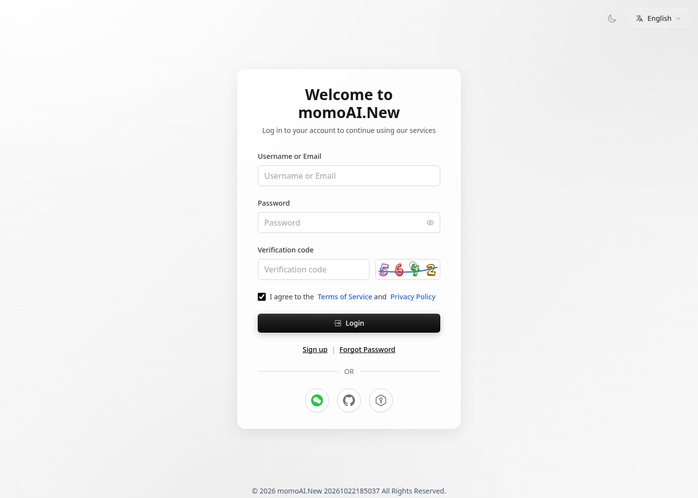
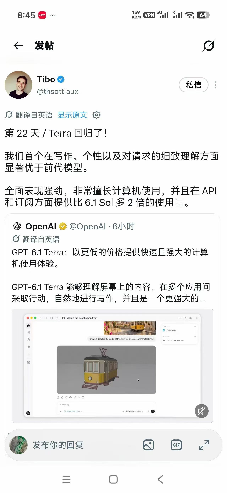

中文说明 · 关键词「gpt6.v下载」· 2026-10
GPT6.v下载指南：网页与API更稳妥
社区检索说明 · 非 OpenAI 仿官网 · TryGPT / TryAllAPI / MomoAI
写在前面
你搜「gpt6.v下载」，多半是想尽快搞清楚：哪里能安全地体验或调用相关模型，而不是点进一堆仿站、下载站或诱导跳转页。下面用中文把检索意图、命名差异、可用路径和风险一次说清。建议收藏本页与同系列内链，遇到改名或列表更新时可以对照复核，避免只凭搜索结果首页的广告位做决定。

命名提示：社区检索常出现 GPT-6、GPT-6.0、GPT-6.v、GPT-6.1（Terra / Sol / Luna / Astra）等写法。
正式名称以 OpenAI 当日公开文档与产品列表为准。本站是社区向中文说明，不是「GPT6.cn」一类仿官网，也不代表 OpenAI 官方中文站。
1. 「gpt6.v下载」：先分清「下载」指什么
大模型服务主流形态是网页对话 + 云端 API。一般情况下，你不需要去所谓官网下载独立的 GPT6.v.exe 或「绿色客户端」。若结果页大力推销破解包、免登录包、离线全家桶，请优先怀疑盗版与恶意软件。
更稳妥的「获取」方式只有：打开可信站点登录对话；或创建 API Key，用 OpenAI 兼容请求调用精确 model id。手机端同样建议用浏览器访问，而不是安装来路不明的 APK。

安全建议：账号、Cookie、支付信息只交给你信任的站点；不要在仿下载站输入验证码或钱包助记词。
2. 正确「获取」方式（不是下 exe）
- 网页对话：打开可信站点 → 登录 → 在模型列表选择 GPT-6 / 6.0 / 相关条目（名称以当日为准）
- API：创建 Key → 用 OpenAI 兼容请求调用 → 把 model 字段换成列表里的精确 id
- 包月：若使用频率高，可看套餐站是否包含目标模型
再次强调：跳过任何要求下载不明安装包的「官网下载」页面。
3. 获取 GPT6.v 能力的正当方式
没有可靠的 GPT6.v 独立安装包时，请用网页或 API：
也可在店铺浏览相关服务说明：https://wzyp.cn/shop/maynorai（仅供参考，非强制购买）。

4. 短步骤
4.1 网页（TryGPT）
- 打开 https://trygpt.asia/
- 注册 / 登录后，在模型列表查找 GPT-6 / 6.0 / 6.v / 6.1 相关条目
- 直接对话验证，无需安装任何客户端
4.2 API（TryAllAPI）
- 打开 https://tryallapi.com/ 创建 Key
- 查阅当日 model id
- 用 OpenAI 兼容写法调用（示意）：
curl https://api.tryallapi.com/v1/chat/completions \
-H "Authorization: Bearer YOUR_API_KEY" \
-H "Content-Type: application/json" \
-d '{"model":"REPLACE_WITH_EXACT_MODEL_ID","messages":[{"role":"user","content":"你好"}]}'4.3 包月（MomoAI）
- 打开 https://momoai.asia/
- 查看套餐与模型清单后按站内指引使用
5. 常见问题 FAQ
为什么搜「gpt6.v下载」全是下载站？
因为「下载」一词对 SEO 很友好，仿站会批量占坑。真正的模型服务几乎都是云端，不需要你下 exe。
手机上怎么用？有没有中文客户端？
用手机浏览器打开对话站即可；不必安装来路不明的 APK。是否有官方中文 App，以 OpenAI 当日产品为准。
API 和网页有什么区别？
网页适合人手动试；API 适合程序批量调用与产品集成。
和 GPT-5 下载有何不同？
本质一样：都不应依赖破解安装包。差别主要在模型列表里的条目名称与能力，用同一提示词对比即可。
官网入口在哪里？
优先官方产品页；国内不便时再用你信任的网页/API。可参见同系列「官网入口」说明页。
免责声明
- 文中站点为第三方服务，不等于 OpenAI 官方。
- 模型是否上架、价格与配额，以各站当日页面为准。
- 本指南不含联盟推广参数（无 aff / 返佣 query）。
- 请自行评估账号安全、数据合规与费用风险；警惕仿官网与恶意「下载站」。
- 本页不提供、不承认任何「GPT6.cn」仿官网声称。